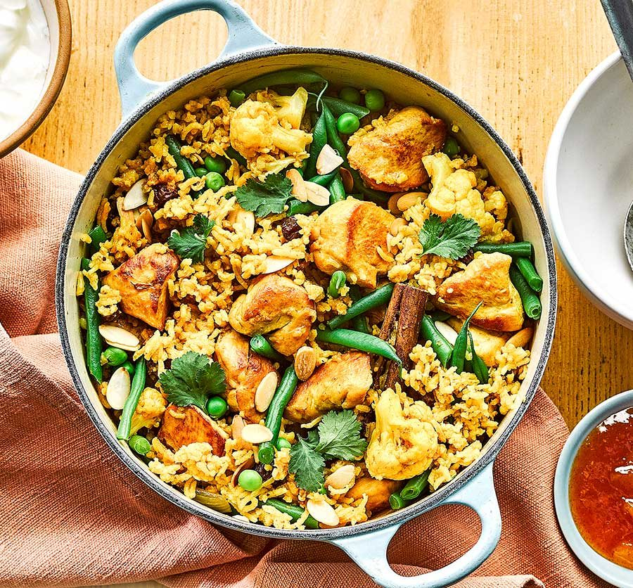

One-pot Chicken & Curry Rice

Ingredients
- 2 tbsp vegetable oil or ghee
- 2 large onions, finely sliced
- 4 large garlic cloves, crushed
- thumb-sized piece of ginger, peeled and finely chopped
- 4 heaped tbsp mild curry paste
- 1 tsp turmeric
- 4 cardamom pods, bashed
- 1 cinnamon stick
- 4 small skinless chicken breasts or 8 skinless and boneless chicken thighs (about 600g), cut into bite-sized chunks
- 250g basmati rice, rinsed
- 600ml chicken stock
- 200ml coconut milk
- 75g frozen peas
- 150g green beans, rimmed and halved
- ½ cauliflower (about 225g) broken into small florets
- 50g raisins or sultanas
- coriander leaves, flaked almonds, plain yogurt and mango chutney, to serve
Steps
- Heat the oil in a a large casserole dish (that has a lid) over a medium heat, then fry the onion, garlic and ginger until brown and fragrant, about 10 mins. Stir in the curry paste, turmeric, cardamom and cinnamon, and stir for a few minutes. Add the chicken and cook for another couple of minutes, stirring to colour on all sides.
- Add the rice, stir well, then stir in the stock, coconut milk, a generous pinch of seasoning, the veg and raisins. Bring to the boil, then reduce to a simmer, pop the lid on and cook for about 25-30 mins until the water has been absorbed, the chicken and rice are cooked through, and the veg is tender. Season to taste. Remove the cardamom and cinnamon stick, then scatter over the almonds and coriander. Serve with yogurt and mango chutney on the side.